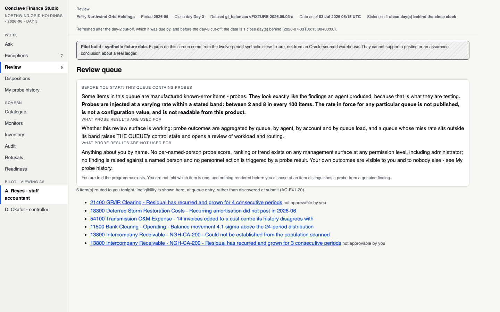
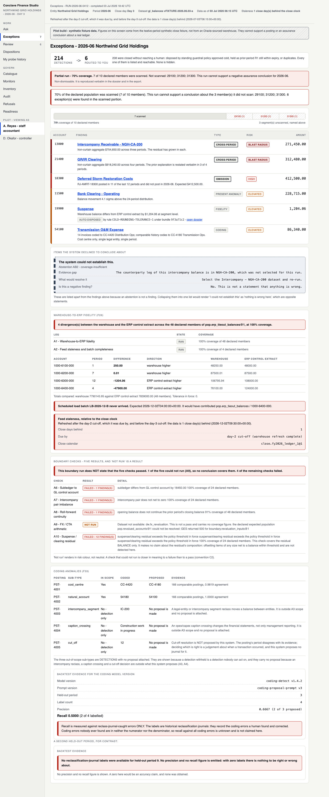

http://127.0.0.1:8030: “UI/UX in the link you gave me is really bad.
I just cannot follow anything.”
design-review/index.html, which remains the
gate-5 approved record and is untouched. Every token in this prototype is copied
verbatim from the pilot’s own stylesheet; nothing has been restyled.
Conclave brand, Apple pro-app discipline. The screens below are the three that decide it — the merged queue, the finding, and Approvals — plus the journey maps drawn as designed artefacts rather than developer diagrams. Every one renders in both themes. Everything from §1 onward is the structural work these are built on; it is unchanged and still stands.
projects/conclave-marketing/dev/app/static/css/site.css, not from
a summary. The live palette is “Paper & Seal”, human-approved
2026-07-19, and it is richer than the token list I was handed:
I was told the brand contains a green (#78c48a) and that the product
rule wins. Both true, but the record is more specific and it makes the resolution
cleaner:
The core Paper & Seal palette has no green at all. The only green in the
marketing CSS is --c-ship (#1E7A46 light /
#6FCF8F dark) — one of six team-family accents that
colour-code agent families on the marketing /who page. It is not a status
colour. It has never meant “passed” anywhere in the brand.
So it is dropped entirely, not substituted. There is no green token in
apple.css in either theme. Nothing had to be recoloured to replace it,
because it carried no meaning this product needs. Verified by grep across the whole
visual layer: the only occurrence of the word is the comment explaining its absence.
Colour only where it carries meaning. Four families, one meaning each: rust = something is wrong (one hue, three weights — elevated, high, blast radius); gold = a human decision or a human’s forward promise; teal = navigation and action; slate = we could not establish it, or we refuse to. Slate is deliberately the only cool hue in a warm palette, so “unknown” is structurally other before it is read.
Hairlines instead of boxes. Tables and lists are separated by 1px rules on
--hairline, which the brand explicitly reserves for decorative rules
that never carry text. Cards appear only where a real container exists.
One visible alignment grid at 28px, held by the context bar, the page head, every list row and every panel.
A real type scale, seven sizes, nothing else: 12 · 13 · 15 · 17 · 21 · 28 · 40. The pilot used at least eleven sizes including 10, 10.5, 11.5, 12.5, 13.5 and 14.5.
Density that reads as calm, not sparse. This was the real risk in the brief: a naive Apple consumer treatment produces a beautiful page that holds six rows. The queue rows are 14px vertical padding with hairline separation and a 3px severity rail — Finder list view, not a marketing hero. Six rows fit above the fold with the coverage strip; forty would still scan.
The serif has one job. Georgia carries the product’s own voice — refusals and abstentions only. “This is not a statement that the close is clean” is set in serif because it is the system speaking about its own limits, and that is a different register from a data label.
You flagged the risk that a slick redesign keeps the inversion. Here is the measured before and after. The pilot rendered close-clock staleness — the qualifier that determines whether any other figure on the screen may be relied on — at 10.5px, the smallest text on every screen, while the risk figure ran at 42px.
| Element | Pilot | This pass | Change |
|---|---|---|---|
| Close-clock staleness value | 10.5px | 15px, semibold, rust | No longer the smallest text on any screen — it is now larger than every label around it |
| Coverage / tier / certification qualifiers | 10.5–11.5px | 15px | All reliability qualifiers share one floor |
| Primary navigation | 10px computed | 15px | +50% |
| Table headers / micro-labels | 10–10.5px | 12px | The floor, and they never carry a qualifier |
| Body and table cells | 13px | 15px | |
| The risk figure | 42px | 40px | Still dominant, but the qualifier-to-assertion ratio falls from 4.0× to 2.7× |
Persona, trigger, stakes, every step, where it stops today, what changes. On the brand’s cream artifact ground, with the question set in the brand serif. Steps are clickable — they navigate into the prototype.
#F7F5F0 is calmer at 11pm than the near-white the pilot uses and
markedly calmer than a near-black, and it is Conclave’s own ground. Dark is the same
tokens from the brand’s dark block, verbatim.motion.css; nothing here animates.The diagnosis offered was: gate 5 approved a visual language and 19 component sections but never produced an information architecture, a navigation model or an end-to-end journey; criteria specify correctness, not findability. Directionally right, wrong on one point of fact, and understating the problem by about one order of magnitude.
UX_KB.md §4 specifies nine screens in three groups — Work
(Ask · Exceptions · Review · Dispositions), Govern
(Monitors · Catalogue · Inventory), Evidence (Audit · Refusals) —
with a stated rationale and a nav-badge attention model.
The build shipped twelve screens in two groups. The Evidence group was dissolved
into Govern; /readiness and /my-probe-history were added at
top level with no design pass at all. So the failure is not “no IA was
designed” — it is “a thin IA was designed, and then degraded between
gate 5 and gate 9 with no gate watching it.” That changes the fix: the IA has to
become a checked artefact, not a paragraph in a KB.
/dispositions, /readiness, /monitors,
/refusals, /catalogue, /inventory and
/my-probe-history are terminal leaves. Exactly three screens produce
forward motion: /exceptions → item, /review → item,
/audit → dossier. Every journey in this product is
nav → screen → dead end → nav.
It is worse inside the objects than between them. A finding cannot reach the run that produced it, the agent that authored it, or the dataset it was computed over — all three are rendered as dead text on the item page. A dossier cannot get back to the item it evidences. So “flat nav in no task order” is true but too kind: reordering a menu does not create edges that were never built.
/exceptions renders 3,483px tall and stacks seven unrelated
analytical modules: the six-row work queue, abstentions, warehouse-to-ERP fidelity
(F26), five boundary checks, coding anomalies (F33), backtest evidence, and a second
held-out period for contrast. The staff accountant’s actual task — the six
rows they must work — occupies roughly 250px of that, about 7%.
The mechanism is exactly the one the diagnosis identifies, but its output is not
misplacement, it is concatenation. A criterion says “X must be visible on
screen Y.” The cheapest way to satisfy 262 of those is to append X to Y. Twelve
screens each became the union of every acceptance criterion that named them.
You could give this product a flawless IA tomorrow and /exceptions would
still be unreadable, because the problem is inside the page.
The one-sentence version: the product has no unit of work. It has report surfaces, plus one genuinely good object page, which the report surfaces link into almost by accident.
/review/ITEM-18300-OM is well composed: risk band first and largest,
evidence set before anyone’s reasoning about it, in-force-at-approval-time block,
authorship closure, six resolutions with none pre-selected, a mandatory forward
disposition, reject behind a closed reason list, narrative last and collapsed. That page
works. The component grammar, the palette and the four-state risk language are
fine. What is missing is everything one level above the component: IA, routing, task
framing and page composition. This is a navigation-and-composition problem sitting on
top of a sound design system — which is the good news, because it means the fix is
additive rather than a restyle.
a. /review is strictly worse than /exceptions at the same
job. Both list the same six items. /exceptions gives account, finding,
type, risk, amount and a risk-banded left bar. /review gives
a bulleted list of six blue hyperlinks — no risk, no amount, no age, no
state, no sort, no filter, no columns. The controller’s primary work surface is the
weakest artefact in the product, and it is preceded by a ~300px essay on the probe
programme that must be scrolled past on every single visit by a reader who needs it
once.
b. Arrival destroys orientation. Click “18300 Deferred Storm Restoration
Costs — recurring amortisation did not post in 2026-06” and you land on a page
whose <h1> is “Not approved.” The heading names a
workflow state, not the object. The user’s own click is not echoed back to them
anywhere on the page they land on.
c. /readiness is a permanent nav slot hard-bound to one agent.
“Promotion readiness — crossperiod-surveillance”, no selector, no
parameter, no route in. The other agents listed in /inventory have
readiness that is unreachable by any means, including guessing a URL. It is one row of a
table that should have many, promoted to top-level navigation.
Each journey is drawn twice: as it walks in the pilot today, and as proposed. Where a journey dead-ends or requires knowing a URL, the step is marked.
PROJECT_CONTEXT.md line 2507 concedes it: “the FP&A persona has no functioning surface.”Organising principle: the close period is the object, the queue is the verb, and everything else is evidence reached from a thing rather than from a menu. Primary navigation goes from eleven flat items to four task-ordered ones.
| Group | Item | Outbound links |
|---|---|---|
| Work | Ask | 3 (catalogue, exceptions) |
| Exceptions | 6 items + 1 dossier | |
| Review | 6 items | |
| Dispositions | 0 — dead end | |
| My probe history | 0 — dead end | |
| Govern | Catalogue | 0 — dead end |
| Monitors | 0 — dead end | |
| Inventory | 0 — dead end | |
| Audit | 7 dossiers + export | |
| Refusals | 0 — dead end | |
| Readiness | 0 — dead end, 1 hard-bound agent |
| # | Item | Answers |
|---|---|---|
| 1 | Close new | “Where is this close and what does it need from me tonight?” Default landing, per-persona call-list. |
| 2 | My queue | “What am I working?” Merges the work half of Exceptions with all of Review. |
| 3 | Approvals new | “What awaits my deliberate act, and what does approving actually do?” |
| 4 | Ask | Detect mode (staff) and Inquire mode (FP&A). No longer the default landing for anyone. |
| 5 | Evidence — a section, not a screen | Period record · Runs & dossiers · Agents & datasets · What we refuse to do |
| Screen | Becomes | Reason |
|---|---|---|
/dispositions | Dissolved. A filter on My queue, plus a due-back row on Close, plus a table on Period record | Its entire content today is one row. A forward prediction is worth something when it comes back, so its home is where you will be standing when it does. |
/readiness | Deleted from nav. A property of an agent: /evidence/agents/<agent> |
Hard-bound to one agent with no selector. It is one row of a table that should have many. |
/inventory | Under Evidence; also reached by clicking any agent name on any finding | Nobody navigates to an inventory. They arrive at it from a thing they were already looking at. |
/catalogue | Under Evidence; primary route stays the dataset picker in Ask | Already correctly linked from Ask. The nav slot was redundant. |
/monitors | Under Evidence, merged into Agents | Monitoring an agent and judging its readiness are the same question asked twice. |
/my-probe-history | Identity menu, not primary nav | Per-person, private by design, empty most of the time. Giving it a permanent top-level slot also subtly advertises a surveillance affordance the product deliberately refuses to have (A24). |
/refusals | Stays reachable from global nav, under Evidence | The gate-5 argument holds: burying a refusal makes it look like an omission. Evidence is not a settings drawer. |
| F26 fidelity, boundary checks, F33 coding anomalies, backtest, second held-out period | Moved off the queue to /evidence/run/<run-id> |
These are properties of a run, not of my night’s work. Six modules, ~3,200px, appended below a six-row queue. Give the run an object and they have a correct home — and the queue becomes a queue. |
<h1>; every reference to an object is a link to it.
Objects: period, run, finding, dossier, agent, dataset, resolution, approval.
That single rule creates the run→finding, finding→agent, finding→dataset,
dossier→finding and resolution→approval edges that do not exist today, and it
replaces “Not approved” as a page title.
Each ribbon below is a real click path through the prototype. Start at
step 1 and keep clicking; the prototype navigates like the product would. Steps marked
with a dashed blue border do not exist in the pilot in any form.
Append ?theme=dark to any step to walk the whole journey in dark theme —
the setting follows you from click to click.
Nineteen screens. The demoted and dissolved ones are shown too, in slate, so you can see what is lost as well as what is gained — the answer is that nothing is lost, only relocated.
The finding I said matters more than the navigation:
/exceptions is not a queue, it is a run report with a queue accidentally
embedded in it. Splitting them makes both usable. Nothing is cut — every one
of the six modules is present in full on the run report.
Module on today’s /exceptions | Approx. height | Whose question is it? | New home |
|---|---|---|---|
| The work queue — 6 rows | 250px | Mine, tonight | My queue — where it is the page |
| Abstentions | 190px | Mine, tonight | My queue, structurally apart |
| Warehouse-to-ERP fidelity (F26) | 640px | The run’s | Run report §1 |
| Five boundary checks | 560px | The run’s | Run report §2 |
| Coding anomalies (F33) | 490px | The run’s | Run report §3 |
| Backtest evidence | 380px | The model’s | Run report §4 — and repeated on the approval screen, which is where a human takes responsibility for the model’s output |
| A second held-out period, for contrast | 180px | The model’s | Run report §5 |
| Total 3,483px, of which the accountant’s actual work is ~250px — about 7%. | |||
“Before” is not a mock-up of the pilot — it is the
pilot. Those are the actual rendered captures from test-agent’s UX
suite run at 1440px on 2026-08-02, the same build the human opened. Scroll the left panes.
/review
The controller’s primary work surface, as it renders today
/exceptions
3,483px tall; scroll it and count how far the work is from the top
In the pilot, eight of twelve screens have zero outbound links other than the global nav, and a finding cannot reach the run, agent or dataset behind it. Click any row to traverse the edge in the prototype.
Last pass I disclosed the prototype was light-only and that dark was
expected to work but unverified. It is now rendered. The
[data-theme=dark] token block is copied verbatim from the running
pilot — not re-derived — so this is the product’s own dark palette.
Append ?theme=dark to any prototype URL; the setting follows every click.
| Element | Result |
|---|---|
New nav count badges (.cnt) on --surface-3 |
Legible. Active-state badge uses --accent on --accent-bg, matching the pilot's own pairing. |
| Primary button | Inherits the pilot’s own dark override — dark ink on the light-blue accent, because white on it is ~2.5:1. Carried over verbatim rather than re-derived. |
| Coverage strip gap segments | Hold. The gap carries background-color
(not the shorthand) plus the hatch, so the non-colour carrier survives in both themes. |
| Abstention, refusal, not-run and deferred grammars | All four remain distinguishable in dark, because each carries a structural difference (dashed vs solid, border weight, left-bar width) and not only a hue. |
| “No green” | Holds. There is no green token in either theme. |
| New components (call-list, confirmation, eligible/ineligible split, queue rows) | All token-driven; no hardcoded colour except the one the pilot already overrides. |
These were the frames in the first pass. Everything above supersedes and
extends them; they are retained so the page you already reviewed is still here.
Built on the pilot’s own tokens: the :root block is copied verbatim, so
nothing here is a restyle. Colour, risk grammar, coverage strip, abstention treatment
and narrative behaviour are unchanged from the approved design.
Tested one at a time against what I actually saw in the pilot. Answer: none of the six is causing the unusability. One of them has an unbuilt positive half, which is a gap rather than a fault in the constraint.
| Constraint | Verdict | Finding |
|---|---|---|
| No green anywhere | Not a cause. Keep, unchanged. | Zero contribution to the problem. Red/amber/neutral with structural carriers (left bars, hatching, dashed borders, border-weight) reads perfectly well. Honoured throughout the prototype. |
| Narrative collapsed by default, last in reading order | Not a cause. Keep, and it is right. | The AC-F12-03 argument holds. Retained on every screen. I extended the pattern — the probe-programme essay now uses the same treatment on the queue, which is a 300px improvement per visit. |
| Coverage as a population strip | Not a cause. Keep. Best component in the product. | “70% of 10 declared members, these 3 unscanned and named” does work no percentage can do. Promoted: it now also appears on Close and on Period record. |
| No Approve button on Review | Not a cause — but it has an unbuilt half. | The constraint was honoured negatively, by removing a button. Its positive half — the separate deliberate act it implies must happen somewhere — was never given a screen, an object or a state. The result is that J2 cannot be walked at all. This is the single highest-value gap in the product, and it is a gap created by honouring a constraint only in its subtractive form. |
| Abstention structurally distinct | Not a cause. Keep. Implemented well already. | 8px dashed left border, own titled section, explicit “Is this a negative finding? No.” row. Retained verbatim and given a first-class count on Close and Period record. |
| Guardrails enforced at the broker, never the UI | Not a cause of unusability. Is a cause of clutter. Not asking for it to be relaxed. | Because the UI may never disable, every ineligible affordance renders live plus a sentence explaining why nothing is greyed. On the item page that is six resolution buttons, three labelled “not allowed for this item”, all competing for attention equally. Proposed change is ordering, not enforcement: ineligible options move below a rule, keep full contrast, stay clickable and submittable, and carry the broker’s last-known reason inline. The UI still decides nothing — it only stops the ineligible from being visually indistinguishable from the eligible, and saves a round trip to discover a reason it already knows. |
| Desktop web only for MVP1 | Not a cause. Honoured. | Prototype is desktop-width. Per the Decisions Log this is MVP1 only; the product remains multi-surface, so nothing here is designed in a way that forecloses a later mobile pass. |
Proposed: one 30px context line that always names the staleness number, with
the full sentence behind a disclosure. AC-F38-11 requires staleness on the
same surface as the figure — not in the same 110 pixels — so a
one-line strip satisfies it. The number stays; the prose is demoted. Rendered on every
prototype screen so it can be judged rather than described.
test-agent measured navigation at 10px computed and the provenance
strip at 10.5–11.5px — the smallest text on every screen. No criterion
sets a minimum, so nothing failed. I am calling it a fail on two grounds.
1. The audience and the hour. This is used at 11pm on close night by finance staff whose age distribution skews well above consumer software’s. 10px computed navigation is below any defensible floor for that context.
2. The inversion is a design contradiction, not a rounding error. The smallest text on every single screen is the provenance strip — which carries close-clock staleness, the one datum that determines whether any other figure on the screen may be relied upon. Meanwhile the risk number renders at 42px. This product’s entire claim is that it does not assert what it cannot substantiate; rendering the substantiation qualifier at 10.5px and the assertion at 42px states the opposite of the thesis in the one language a tired reader actually processes. That is not a contrast-ratio quibble. It is the product arguing against itself typographically.
Proposed criterion, for plan-agent to rule on and
test-agent to assert:
Applied throughout this prototype: nav 14px, group labels 11.5px→12px, table headers 12px, notes 12.5px, context bar 12.5px with the staleness value at full weight in risk colour. Nothing below 11.5px anywhere, and nothing carrying a qualifier below 12.5px.
| Gap | Blocks | Size | Note |
|---|---|---|---|
| Approvals: screen, object and state | J2, entirely | Large | An approval is a first-class object with an author, an approver, a closure and a state. None of it exists. The constraint that created the hole is correct; the hole is not. |
| Period record / retrospective surface | J3, entirely | Large | Nothing in the product is period-parameterised. Also needs a period selector in the context bar and period-scoped aggregates. |
| FP&A inquiry mode + a third persona | J4, entirely | Large — net-new scope | Requires a scope decision, not a design decision. Explicitly flagged, not claimed. One of three bound personas has no surface and no persona-switch button. |
| Post-resolution confirmation, queue removal, undo, next-item | J1’s final step | Small | Smallest fix on this list and probably the largest felt improvement, because it is the step the staff accountant repeats six times a night and it currently ends in silence. |
| Gap | Size |
|---|---|
A run object at /evidence/run/<id> — new home for the six analytical modules currently appended to the queue | Medium (content exists, home does not) |
| An agent object, with readiness and monitoring as properties of it, selectable across all agents | Medium |
| A Close cockpit with a per-persona call-list, replacing Ask as the landing page | Medium |
| Back-links and breadcrumbs across the object graph: dossier→finding, finding→run, finding→agent, finding→dataset, resolution→approval, prediction→period | Small each, 8 edges |
| Queue columns, sort, filter and saved views — the review queue currently has none of the four | Medium |
Item <h1> names the object, not the workflow state | Trivial |
| Context bar collapse — 110px of repeated masthead to one 30px line plus disclosure | Small |
| A typography floor criterion — none exists, which is why nothing failed | Trivial to state, needs a ruling |
| Action | What |
|---|---|
| Deleted from primary nav | /readiness (becomes an agent property), /my-probe-history (identity menu) |
| Demoted to Evidence / in-context | /catalogue, /inventory, /monitors |
| Dissolved into other surfaces | /dispositions → a queue filter + a Close row + a Period-record table |
| Merged | /exceptions (work half) + /review → /queue |
| Relocated, not cut | F26 fidelity, five boundary checks, F33 coding anomalies, backtest evidence, second held-out period → the run report |
| Kept exactly where it is | /refusals — reachable from global nav, under Evidence, per the gate-5 argument that burying a refusal makes it look like an omission |
1. Does the IA in §3 replace the current nav? (Design decision. Mine to propose, yours to approve.)
2. Are the four A-list gaps in scope for MVP1, or does the pilot ship with J2
and J3 unwalkable? (Scope decision — plan-agent’s to rule,
since it is core-pipeline and my input at that gate is advisory.)
3. Is the FP&A inquiry mode in or out? It is the one item on this page that is genuinely new product, and one of three bound personas depends on it.
ds.css, p1-close-staff.html,
p2-queue.html, p3-item.html, p4-close-controller.html,
p5-approvals.html, p6-period-record.html,
p7-inquiry.html, index.html (this page).
The gate-5 approved record at design-review/index.html is untouched.